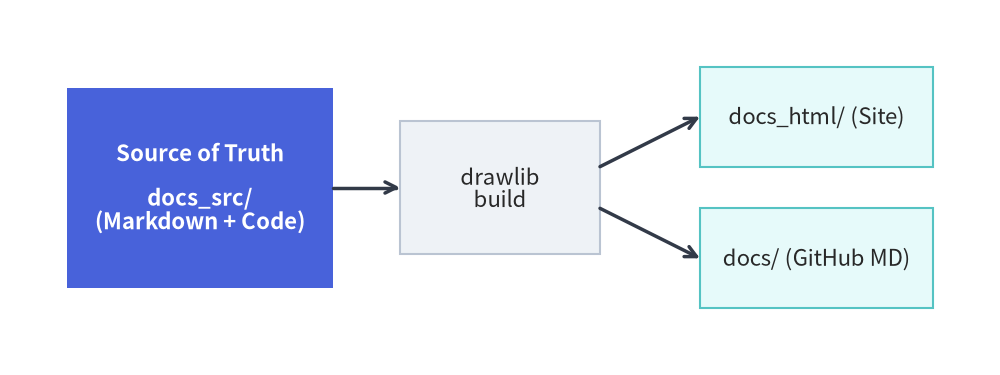
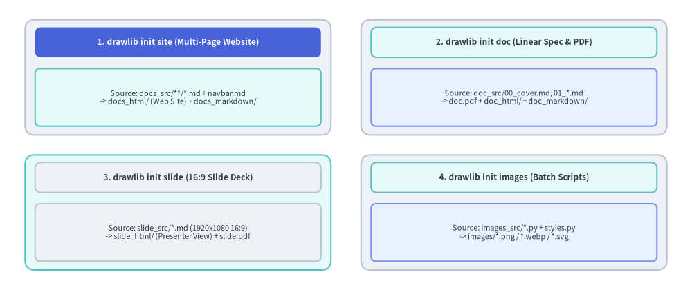

Documentation Project & Build Overview
Drawlib is not only a drawing library—it is a complete documentation compiler that bridges executable Python illustrations and version-controlled technical documentation.
The Documentation-as-Code Workflow
Instead of writing documentation in static wikis and manually copying and pasting PNG screenshots, Drawlib establishes a clean, repeatable build pipeline:

Source Code
from drawlib.canvas import save, setup
from drawlib.shapes import rectangle
from drawlib.lines import line
from drawlib.styles import Styles
setup(width=120, height=45)
# Source folder (Hero focal origin)
rectangle((24, 22.5), width=32, height=24, style=Styles.PrimaryFlat, text="Source of Truth\n\ndocs_src/\n(Markdown + Code)", text_style=Styles.WhiteBold)
# Build engine (Calm Neutral card)
rectangle((60, 22.5), width=24, height=16, style=Styles.Neutral, text="drawlib\nbuild")
# Outputs (Secondary Neutral cards)
rectangle((98, 31), width=28, height=12, style=Styles.SecondaryNeutral, text="docs_html/ (Site)")
rectangle((98, 14), width=28, height=12, style=Styles.SecondaryNeutral, text="docs/ (GitHub MD)")
# Lines
line((40, 22.5), (48, 22.5), arrow_head="->", style=Styles.DarkBold)
line((72, 25), (84, 31), arrow_head="->", style=Styles.DarkBold)
line((72, 20), (84, 14), arrow_head="->", style=Styles.DarkBold)
save()
The Golden Rule: <name>_src/ is the Single Source of Truth
- Always edit Markdown files and Python code inside the source directory (e.g.
docs_src/). - Never edit the output directories (
docs/,docs_html/,docs.pdf) directly; they are build artifacts completely overwritten during compilation.
1. Project Scaffolding (drawlib init)
Scaffold a complete project template with a single command:
# List available starter project templates
$ uv run drawlib init list
# Initialize a multi-page documentation website (creates docs_src/)
$ uv run drawlib init site
# Or scaffold into a custom target name (positional argument, e.g., mybook_src/ -> mybook_html/):
$ uv run drawlib init site mybook
# Optional flags: --style (-s) for theme and --lang (-l) for language fonts
$ uv run drawlib init doc rbac -s google --lang ja
Drawlib supports four starter project types:
doc: Linear technical document / spec / RFC / report compiled to HTML (doc_html/), PDF (doc.pdf), Markdown (doc_markdown/), and diagrams (doc_images/).site: Multi-page documentation website (docs_html/), Markdown site (docs_markdown/ordocs/), and diagrams (docs_images/).slide: 16:9 presentation slide deck compiled to web deck (slide_html/), vector PDF (slide.pdf), and diagrams (slide_images/).images: Standalone Python illustration scripts (images_src/*.py) batch-compiled to image files (images/*.png).

Source Code
from drawlib.canvas import save, setup
from drawlib.shapes import rectangle
from drawlib.styles import Styles
setup(width=138, height=58)
# 1. Top-Left: drawlib init site (Hero header)
rectangle((35.5, 42.5), width=61, height=23, style=Styles.Neutral.patch(shape_r=2))
rectangle(
(35.5, 49.5),
width=57,
height=6,
style=Styles.PrimaryFlat.patch(shape_r=1.2),
text="1. drawlib init site (Multi-Page Website)",
text_style=Styles.WhiteBold.patch(text_size=8.5),
)
rectangle(
(35.5, 38.5),
width=57,
height=11.5,
style=Styles.SecondaryNeutral.patch(shape_r=1),
text="Source: docs_src/**/*.md + navbar.md\n-> docs_html/ (Web Site) + docs_markdown/",
text_style=Styles.Dark.patch(text_size=7.9),
)
# 2. Top-Right: drawlib init doc
rectangle((102.5, 42.5), width=61, height=23, style=Styles.Neutral.patch(shape_r=2))
rectangle(
(102.5, 49.5),
width=57,
height=6,
style=Styles.SecondaryNeutral.patch(shape_r=1.2),
text="2. drawlib init doc (Linear Spec & PDF)",
text_style=Styles.DarkBold.patch(text_size=8.5),
)
rectangle(
(102.5, 38.5),
width=57,
height=11.5,
style=Styles.PrimaryNeutral.patch(shape_r=1),
text="Source: doc_src/00_cover.md, 01_*.md\n-> doc.pdf + doc_html/ + doc_markdown/",
text_style=Styles.Dark.patch(text_size=7.9),
)
# 3. Bottom-Left: drawlib init slide
rectangle((35.5, 15.5), width=61, height=23, style=Styles.SecondaryNeutral.patch(shape_r=2))
rectangle(
(35.5, 22.5),
width=57,
height=6,
style=Styles.Neutral.patch(shape_r=1.2),
text="3. drawlib init slide (16:9 Slide Deck)",
text_style=Styles.DarkBold.patch(text_size=8.5),
)
rectangle(
(35.5, 11.5),
width=57,
height=11.5,
style=Styles.Neutral.patch(shape_r=1),
text="Source: slide_src/*.md (1920x1080 16:9)\n-> slide_html/ (Presenter View) + slide.pdf",
text_style=Styles.Dark.patch(text_size=7.9),
)
# 4. Bottom-Right: drawlib init images
rectangle((102.5, 15.5), width=61, height=23, style=Styles.Neutral.patch(shape_r=2))
rectangle(
(102.5, 22.5),
width=57,
height=6,
style=Styles.SecondaryNeutral.patch(shape_r=1.2),
text="4. drawlib init images (Batch Scripts)",
text_style=Styles.DarkBold.patch(text_size=8.5),
)
rectangle(
(102.5, 11.5),
width=57,
height=11.5,
style=Styles.PrimaryNeutral.patch(shape_r=1),
text="Source: images_src/*.py + styles.py\n-> images/*.png / *.webp / *.svg",
text_style=Styles.Dark.patch(text_size=7.9),
)
save()
2. One-Command Compilation (drawlib build)
Once initialized, compile your documentation using the generated build.sh script or the drawlib build CLI:
# Run the project master build script
$ ./docs_src/build.sh
# Or compile using the CLI subcommands directly:
$ uv run drawlib build html docs_src/ -o docs_html/
$ uv run drawlib build markdown docs_src/ -o docs/
$ uv run drawlib build pdf doc_src/ -o doc.pdf
$ uv run drawlib build slide slide_src/ -o slide_html/
$ uv run drawlib build image images_src/ -o images/
# Force a clean re-render bypassing the SQLite build cache (.drawlib/cache.db):
$ uv run drawlib build html docs_src/ -o docs_html/ --no-cache
During the build process:
- Drawlib detects all
drawlibcode blocks across your Markdown documents (or.pyscripts inimages_src/). - The code blocks are executed in isolated memory spaces to render vector/raster diagrams.
- Rendered images are cached deterministically in
.drawlib/cache.db(only modified code blocks or styles re-render; pass--no-cacheor runuv run drawlib cache clear --imagesto force re-rendering). - The final HTML website, slide deck, PDF, or rendered Markdown documents are generated with verified image links.
3. Local Live Preview & Link Verification (drawlib serve)
Preview your compiled HTML site locally with automatic pre-flight link and asset inspection:
# Start local HTTP preview server on http://localhost:8000
$ uv run drawlib serve docs_html/
# Run headless broken-link and missing-asset verification only (ideal for CI/CD)
$ uv run drawlib serve docs_html/ --check
Open http://localhost:8000 in your browser to inspect the full documentation site, navigation sidebar, and responsive styling.
[!NOTE] For in-depth guides on code block attributes (
show-code,fold-code,caption:), custom HTML templates, CSS theming, caching, and Chromium PDF exports, see Chapter 8: Document Builder & CLI.